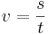

De: La Frikipedia, la enciclopedia extremadamente seria.
De: La Frikipedia, la enciclopedia extremadamente seria. De: La Frikipedia, la enciclopedia extremadamente seria.
| De la serie ciencias naturales y sociales: | |||
| Biología | |||
| |||
| Año de creación | A saber. | ||
| ¿Sigue en uso? | Sí. | ||
| ¿Que estudia? | La vida (o muerte). | ||
| Científicos que la practican | No muchos, todos fumados. | ||
| Gente "normal" que la practica | ¡Ninguna! | ||
| Nivel de frikismo | Moderado. | ||
| ¿Para que |
Para abrir expedientes a las especies, y tenerlos archivados para usos posteriores. | ||
| Dificultad | Alta. | ||
| Máximo exponente | Darwin, Charles. | ||
| ¿Es recomendable? | Ahora sí. En unos siglos, no. | ||
La biología es una ciencia dedicada al estudio de los seres vivos en general (con menos énfasis en el ser humano) y que permite saber, entre otras cosas, el día del tradicional apareamiento de la oruga de la patata trovadora.
¿Queréis encontrar la Verdad? Adelante. Acercaos y atended mis palabras, pues así es como acontece.
Dos son los aspectos que jamás nosotros, los seres humanos, podremos entender:
Lo único que podemos hacer estudiar las cosas a partir del big-bang y partir de despreciables microorganismos, respectivamente. Pero olvidémonos del Universo y dediquémonos con exhaustividad al estudio de la vida.
Existe un desfase temporal enorme entre el comienzo de la vida y la ciencia que la estudia, la biología. Por ello es conveniente diferenciar entre historia de la vida e historia de la biología.
En un astro de una galaxia (en concreto, un planeta, el nuestro) se dieron ciertas condiciones que produjeron un error en el espacio-tiempo que acarreó que cierta materia microscópica comenzase a no estar exclusivamente condicionada por la física y la química de su entorno. Expliquemos esto: un guijarro en un río irá a donde el río lo lleve (acondicionamiento físico), pero en cambio, un salmón puede luchar contra la corriente del río (no está condicionado físicamente).
Se dice que este error espacio-temporal tuvo lugar en el agua, y que la mencionada materia microscópica comenzó a reproducirse y a evolucionar. Los descendientes evolucionados se especializaron según sus propios intereses:
Ahí estaba la vida, plantando cara la propia materia inerte. Tengamos en cuenta que todos estos hechos tuvieron lugar a lo largo de millones de años. Y ya nos cuesta contar hasta cien.
La biología nació cuando a una serie de mendas no se les ocurrió otra cosa que la de analizar secuencialmente todas y cada una de las especies para clasificarlas y ponerles nombre. El nombre científico debe estar en latín, para causar terror en el lector y aumentar las posibilidades de que éste huya por el mero hecho de leer cephalotaceae.
La biología experimentó un importante desarrollo gracias a Charles Darwin, quien en un arrebato de ira, plantó cara a Monesvol creando la teoría evolutiva de la Selección Natural. De hecho, publicó una obra en la que argumentaba que, en efecto, Dios había evolucionado a partir de un plato de spaghetti con albóndigas, y que la existencia de Diox se debe a que Dios realizó mal su bipartición.
Otras brillantes personas que contribuyeron al desarrollo biológico son Félix Rodríguez de la Fuente y el tío de Master & Commanders al que le meten un tiro para que demuestre lo buen médico que es.
Actualmente los estudios biológicos se centran en encontrar una respuesta a las siguientes preguntas:
Ecosistema es aquel lugar del espacio en el que
a) hay seres vivos.
b) las condiciones a sus alrededores son adecuadas para que vivan.
La primera condición es obvia. Veamos un ejemplo para la segunda.
Analizar biológicamente el sistema Cooler+sol (argumentar si dicho sistema es un ecosistema).
La primera condición se verifica, pues hay un ser vivo en el sistema, Cooler. Entonces, el sistema podría ser ecosistema. No obstante, las condiciones del sol matan a Cooler, por lo que la segunda condición no se verifica y por tanto el sistema no es un ecosistema.
Por ley, ecosistema= biocenosis+biotopo.
Constituida por los seres no inertes, es decir, aquellos que se nutren se relacionan y que no tienen por qué reproducirse.
Existen dos tipos de seres vivos:
Son tan insignificantes que ni si quiera merecen atención. Pero claro, luego van los Ala-X y destruyen la Estrella de la Muerte. Los hay con cilios y los hay con flagelos. Resulta interesante poder cuantificar la velocidad media de uno de estos especímenes ¿cuál, el de cilios o el de flagelos? para hacernos una idea de la cinemática cotidiana del mundo microscópico.
La fecundación en seres humanos tiene lugar entre tres y cuatro días después del acto sexual. Sabiendo cuál es la longitud de las trompas de Falopio, podemos determinar la velocidad media de un espermatozoide, a partir de la expresión .
Las trompas de Falopio miden 11 cm.
Ahora no tenemos más que aplicar la fórmula y reírnos de los seres microscópicos.
.
Juas.
Bien por su nombre o bien por eliminación, aquellos seres cuyo tamaño hace posible que no pasen desapercibidos. Existe una lista exhaustiva de los criterios de clasificación de estos seres, en la cual no vamos a profundizar debido a que si empezamos, no terminamos. Solamente decir que los hay vivíparos, los hay ovíparos; los hay vertebrados, los hay invertebrados; los hay sexuales, los hay asexuales; los hay parásitos, los hay simbióticos; los hay carnívoros, los hay herbívoros... los hay inteligentes y los hay estúpidos.
Procediendo como en el apartado anterior, la velocidad media en el mundo macroscópico (de los seres vivos) debe rondar en torno a los .
Se define el Índice de Extinción de Especies (IEE) como el cociente de la velocidad media del mundo macroscópico y la velocidad media del mundo microscópico:
Artículo principal: Funciones vitales
Constituido por los seres inertes. Entornos espaciales donde viven los no inertes. El biotopo varía mucho dependiendo del lugar de la Tierra en el que nos encontremos.
Biotopo hostil cuyas condiciones climatológicas acabarán con los trepas que osen adentrarse en él. En efecto, el asesino es el propio desierto (calor, falta de agua, tormentas de arena...), aunque siempre te puede picar un escorpión o morder un camello (o dromedario en su defecto). Los seres que lo habitan simplemente estás acosumbrados a subsistir con poca agua. Es un estereotipo en la cultura popular lo de la última gota de agua de la cantimplora, los espejismos y los oasis. En cualquier caso, los desiertos son el paraíso para Gaara.
A diferencia del desirto, los exploradores que se atreven a entrar en una selva padecerán debido a la picadura de algún bicho. Asimismo, existe una probabilidad no menos despreciable de ser devorado por una tribu caníbal o lo que es más típico: despertar a una pantera que estaba durmiendo para después morir despedazado tras decir un desesperado <<gatito, gatito bonito>>. No obstante, el mayor estereotipo de las selvas es el típico explorador que va con una especie de sable cortando las hojas para abrirse camino.
No confundir con sábanas (aunque en muchos casos éstas también constituyen biotopos, depende de la higiene). Salvo los leones, las jirafas y los elefantes, no tiene nada más representativo.
Reflejos malvados de los desiertos, los polos se encargan de exterimnar a sus vistitantes a través del poder de la congelación absoluta. Hoy en día no se sabe quién es más estúpido, si el que se adentra en un desierto o si el que se va a alguno de los polos. El problema fue planteado a un ordenador, que después de estar varios años realizando cálculos, dio la siguiente "solución":
| Cada uno es más estúpido que el otro. |
|---|
El mayor exponente de los polos son... los pingüinos, por encima incluso de los esquimales y los osos polares, aunque no se ha de menospreciar a las focas ni a las morsas.
Hay otros cuantos más los cuales son desconocidos: tundra y estepa, por ejemplo.
También conocida como diversidad de las especies, se define como el número de especies distintas por unidad de área que hay en una determinada región. La biodiversidad lo único que puede hacer es disminuir, a no ser, claro está, que vaya un listo y lleve especies de un ecosistema a otro (e.g. cuando Yamcha quiso llevar los lobos al desierto).

Autor(es):